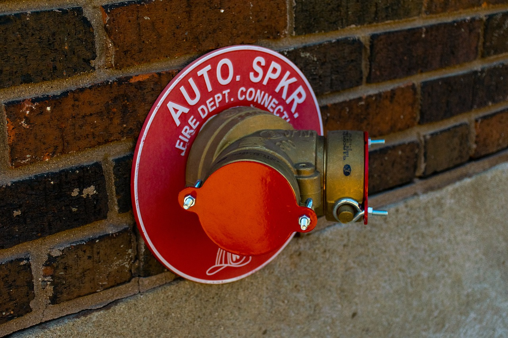
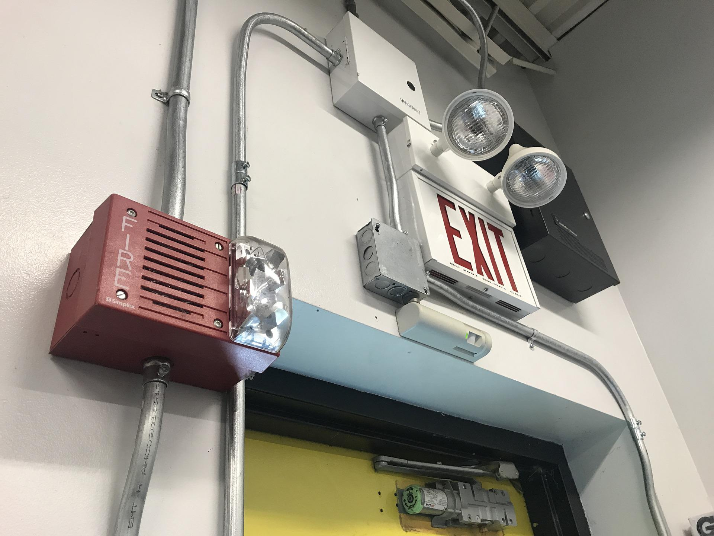
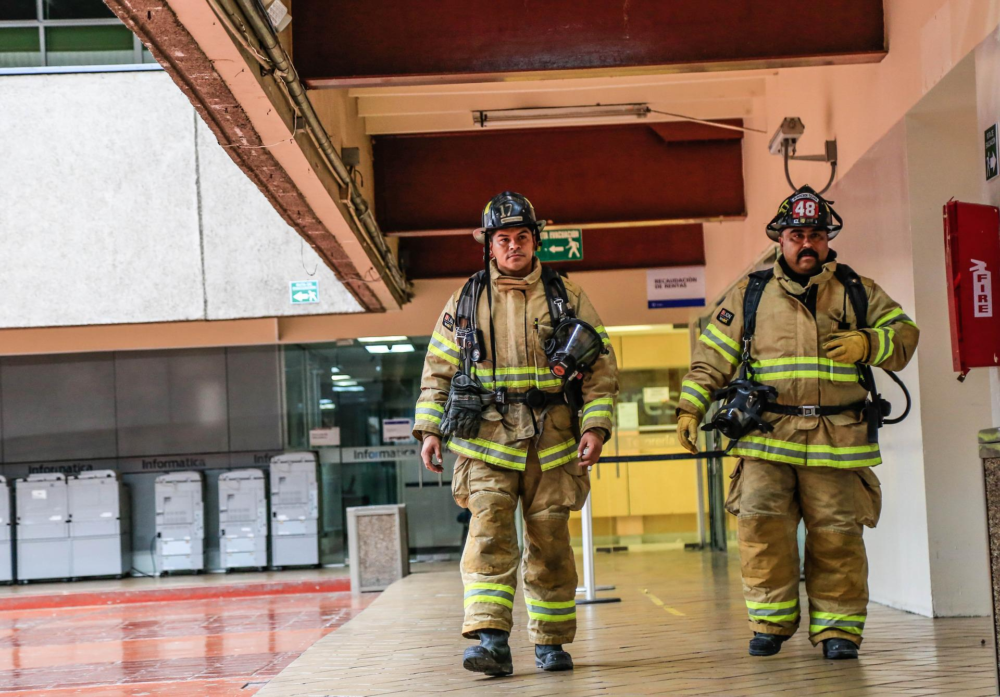
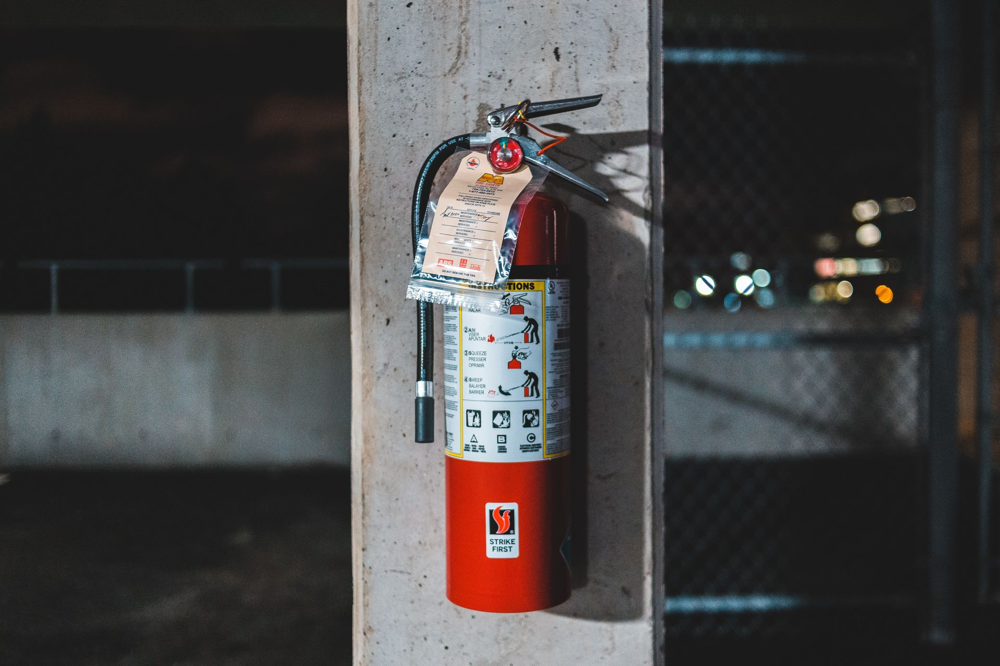
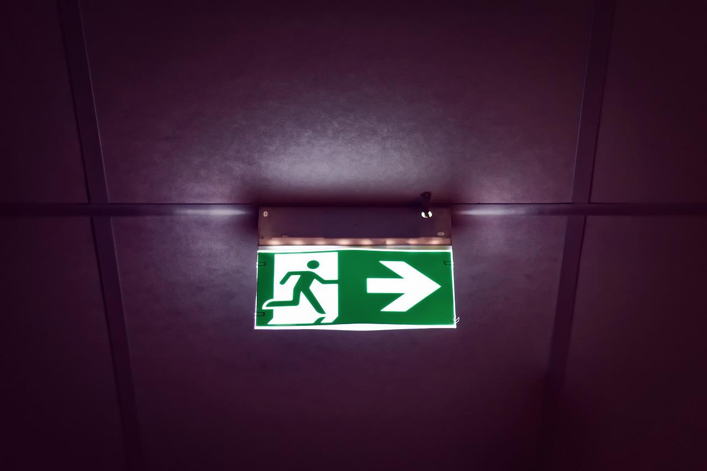
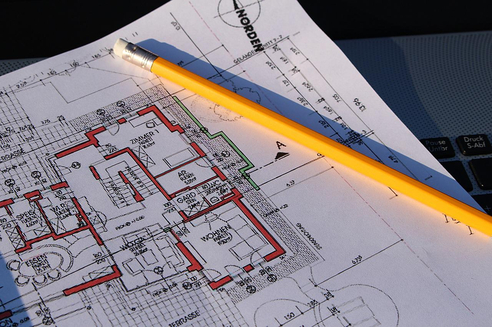

Elaboramos presupuestos a sus posibilidades tanto en el ramo comercial, residencial e industrial
¿DESEAS CONSTRUIR A CORTO MEDIANO O LARGO PLAZO?
En Grupo CONSAT podemos ayudarte
En Grupo CONSAT
Ofrecemos servicios profesionales
Anteproyecto
Elaboración de planos arquitectónicos
Tramitación de permisos
Presupuestos
Programas de obras
Levantamientos topográficos
¿Deseas hacer un presupuesto?
Tenemos la capacidad para realizar un presupuesto de las siguientes etapas de tu construcción
Proyecto Ejecutivo.
Memoria de Cálculo Estructural.
Cálculo Sistema Hidrosanitario (240 salidas).
Diseño y Cálculo de Sistema vs
Incendio.
Estudio de Mecánica de Suelos.
Proyecto
Eléctrico.
Proyecto ejecutivo
Nuestro equipo tiene la capacidad de brindarte los siguientes servicios
Levantamiento topográfico y Digitalización del edificio existente.
Desarrollo o asesoramiento del anteproyecto.
Realización de planos Plantas Arquitectónicas, Planta conjunto, localización, cortes, fachadas, acabados o detalles de muros divisorios.
Diseño de láminas para Planos de Instalaciones Hidráulicas, Sanitarias o Eléctrica.
Firma de proyectista
Director de Obra.
¿Qué es un proyecto ejecutivo?
Conjunto de planos,documentos y especificaciones que indican la solución constructiva y todas las características que tendrá la obra programada, para el correcto desarrollo, ejecución y control de una obra.
¿Por qué es necesario?
Un proyecto ejecutivo correcto y bien detallado garantiza la fluidez de las obras, evitando sorpresas y errores estructurales que puedan ocasionar pérdidas o incluso el embargo de la empresa.
Memoria de Cálculo Estructural
Introducción
Hace referencia al nombre y la ubicación del proyecto en revisión.
Descripción Detallada del Proyecto
Reseña que proporciona información respecto a los datos generales de estructura que van desde la calidad topológica, geométrica hasta la composición de las propiedades mecánicas de cada material.
Detalle de las Normas Utilizadas
Se describe la normativa utilizada a los largo del proyecto
Cuadro explicativo de la Memoria de Cálculo
Constituye un apartado donde se detallan las verificaciones y los cálculos realizados, los elementos de la estructura
Observaciones Generales
Se valoran los resultados obtenidos durante el desarrollo de la documento
Planos arquitectónicos
Se incluyen los planos arquitectónicos.
Firma de Responsable Proyectista y Anexos
Se incluye la firma del responsable encargado y se agregan los anexos correspondientes
¿Qué es una memoria de cálculo estructural?
Es un documento descriptivo donde se reflejan de manera exhaustiva los procedimientos aplicados para el cálculo de determinada estructura y el dimensionamiento de cada uno de sus elementos.
¿Para qué sirve una memoria de cálculo estructural?
Su función es transmitir, de forma veraz y detallada, los procedimientos y los resultados que ha generado el calculista a segundos y terceros. De manera que se cumplan los siguientes puntos.
Verificación de la información y cálculos
Obtención de un coste, lo más aproximado a la realidad que sea posible
Es un requisito a la hora de obtener permisos para casi cualquier tipo de construcción
Diseño y Cálculo del Sistema Hidrosanitario
Los proyectos de instalaciones sanitarias se desarrollan con el fin de que los servicios correspondientes, tengan suministro directo a la acometida facilitando su administración, dando cumplimiento a lo establecido por los reglamentos nacionales.
Diseñar los sitemas hidrosanitarios y calcular los materiales necesarios para el desarrollo del proyecto es fundamental en cualquier tipo de construcción, ya que permite optimizar los recursos y evitar sistemas de distribución ineficentes, además de justificar las desiciones llevadas a cabo durante el transcurso de la obra.
En Grupo CONSAT
Estamos capacitados en:
❯
Diseño y Cálculo de Red hidráulica general con tubería
PVC, CPV o cobre.
❯
Cálculo de diámetro de tubería de alimentación
requerida por CESPT.
❯
Diseño y dibujo de detalles de módulo de medidores de acuerdo a CESPT.
❯
Diseño y cálculo de línea general de descarga con tubería ABS.
❯
Cuadro de detalles de interconexión, hidráulicas y sanitarias.
❯
Apoyo técnico para el dibujante de los planos hidrosanitarios para el proyecto ejecutivo.
Diseño y cálculo de sistemas en contra de incendio

Diseño de red hidráulica en contra de Incendio mediante rociadores automatizados.
Sistemas de detección automáticos o manuales.

Sistemas de alerta mediante timbres o megafonía y señalización para las vías de evacuación, con sistema de iluminación mínimo, alimentado por baterías.

Sistemas automáticos de alerta para el cuerpo de bomberos de la ciudad.

Sistemas
de Extinción Manual estableciendo su ubicación y selección más adecuada de
agentes extintores.

Elaboración de los planos de los elementos componentes del sistema en contra incendio propuesto.
Estudio de mecánica de suelos
¿Qué son los estudios de mecánica de suelos?
Dichos estudios permiten conocer las características físicas, mecánicas e inclusive químicas(asfalto) del terreno donde se busca construir, para ello se estudia la composición estratigráfica, es decir, las capas de diferentes características que componen el suelo, con ello se determina del nivel de profundidad al que deben realizarse las fundiciones en la construcción, además de demostrar la existencia de riesgos geológicos y que medidas son necesarias para evitar cualquier problema.
Este estudio se divide 3 fases:
Investigación preliminar
Investigación de campo y ensayos de laboratorio
Elaboración de informe
FASE 1. Investigación preliminar del gabinete
Para realizar los estudios de mecánica de suelos, se necesita investigar sobre los mapas geológicos, dichos mapas permiten observar los diferentes tipos de rocas que afloran en la superficie terrestre y los tipos de contactos entre ellas, también se muestran las estructuras tectónicas (pliegues y fallas), yacimientos fósiles, fuentes, recursos minerales, etc. Esta investigación se realiza con el fin de saber si ya existe información sobre las distintas características del terreno.
A continuación se mencionarán los puntos de la investigación preliminar
Investigación preliminar
Durante está fase se realizan investigaciones de los distintos riesgos geológicos con el fin de poder actuar de forma preventiva para minimizar el impacto que podrían causar tanto de las personas como de bienes, por ello conocer su comportamiento y cómo se encuentra distribuido en el territorio es indispensable.
Fallas Geológicas
Se define como una grieta en la corteza terrestre a lo largo de la cual se mueven los bloques rocosos que son separados por ella tienden a desplazarse, existen 3 tipos de fallas:
Normales
Inversa
De desplazamiento
Licuefacción
Es un fenómeno que ocurre en los terrenos
, a causa de la saturación de agua, particularmente en sedimentos recientes como arena o grava, pierden su firmeza y estabilidad, por ello es una causa mayor de destrucción relacionada con terremotos.
Agua subterránea
FASE 2. Investigación de campo y ensayos de laboratorio
Investigación de campo
Una vez concluida la fase anterior y que se ha aprobado la continuación del estudio se procede con la investigación de campo, esto con el fin de conocer a detalle el tipo de suelo y las condiciones del mismo, para ello se recolectan muestras para la realización de diversos estudios que revelarán la composición físico-química de los suelos, para ello se llevan a cabo los siguientes procesos:
Corte con disco y demolición a mano de piso de concreto, se incluye el acarreo del material producto de las demoliciones.
Se realizaron excavaciones y cortes de cepas a mano, con el fin de conocer las características de la cimentación.
Sondeos exploratorios estandar.
Pruebas de penetración estandar.
Toma de muestras representativas de suelo.
FASE 2. Investigación de campo y ensayos de laboratorio
Pruebas de laboratorio
Los estudios de laboratorio se realizan una vez que ya se han recolectado las distintas muestras de suelo a distintas profundidades, para el estudio de laboratorio algunos ensayo se realizan “in situ” y otros se realizan en directamente en nuestro laboratorio, sin embargo se realizan las siguientes pruebas:
Ensayos de índices de expansión.
Clasificación de suelos.
Ensayos de valor relativo soporte.
Ensayos de determinación de peso volumétricos.
Ensayes de contenidos de humedad óptima.
Granulometria.
FASE 3. Elaboración del informe
Ya que se ha realizado las pruebas y estudios necesarios para determinar las distintas características del terreno donde se planea construir, se procede con la elaboración de un informe donde se detalla cada uno de los resultados obtenidos durante los estudios de campo y laboratorio, una vez con dicho informe se procede a realizar la construcción o se abandona el proyecto, además se delimita la cantidad de peso que puede soportar el suelo y en caso de que se proceda con la construcción, se realizan recomendaciones sobre materiales y la construcción
En el informe se incluye Análisis determinísticos
Es un modelo matemático donde las mismas entradas o condiciones iniciales producirán invariablemente las mismas salidas o resultados.
Está relacionado con la creación de entornos simulados a través de simuladores para el estudio de situaciones hipotéticas, o para crear sistemas de gestión que permitan disminuir la propagación de errores.

Grupo consat
Proyecto eléctrico
Contamos con personal apto para realizar tus proyectos eléctricos
La elaboración del proyecto eléctrico, incluye el diseño de la
concentración de medidores, cálculos de cargas así como las especificaciones de materiales y el equipo necesario para realizar las instalación de manera correcta y segura, por otro lado se incluyen los cuadros de carga individuales o genéricos dependiendo del proyecto a tratar, también se incluyen 2 copias de cada plano eléctrico en "copia dura" y un disco compacto con el proyecto, además de la firma profesional y apoyo con la tramitación ante la comisión federal de electricidad